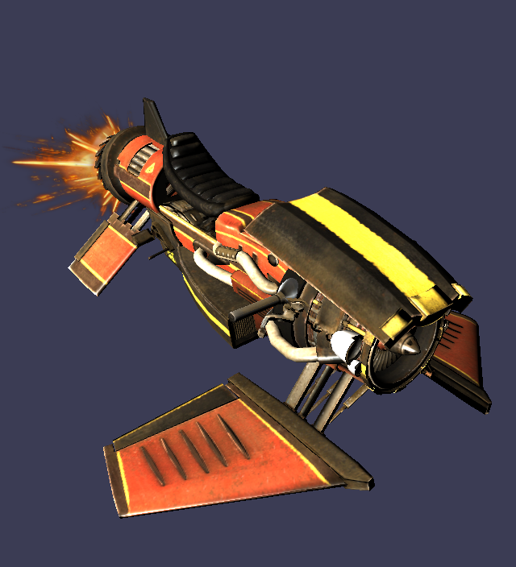
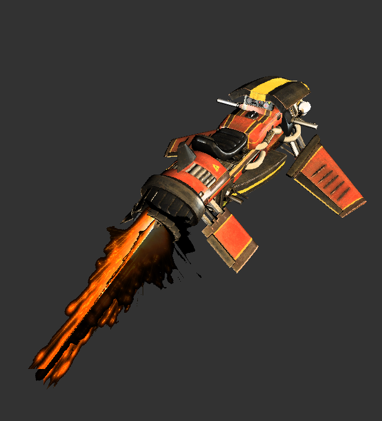
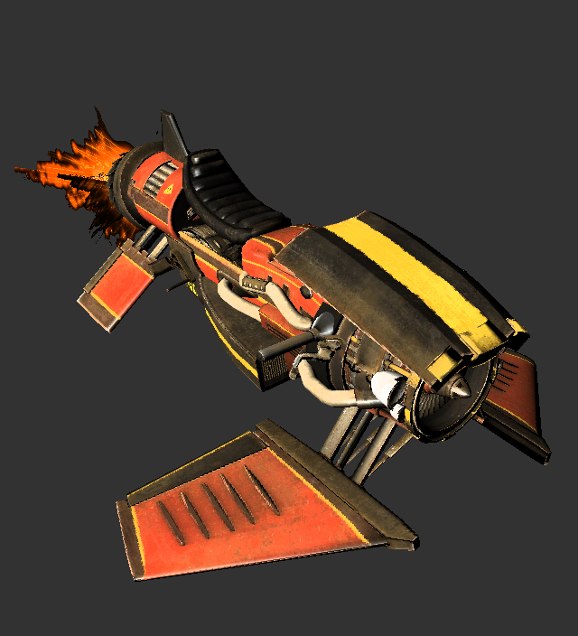
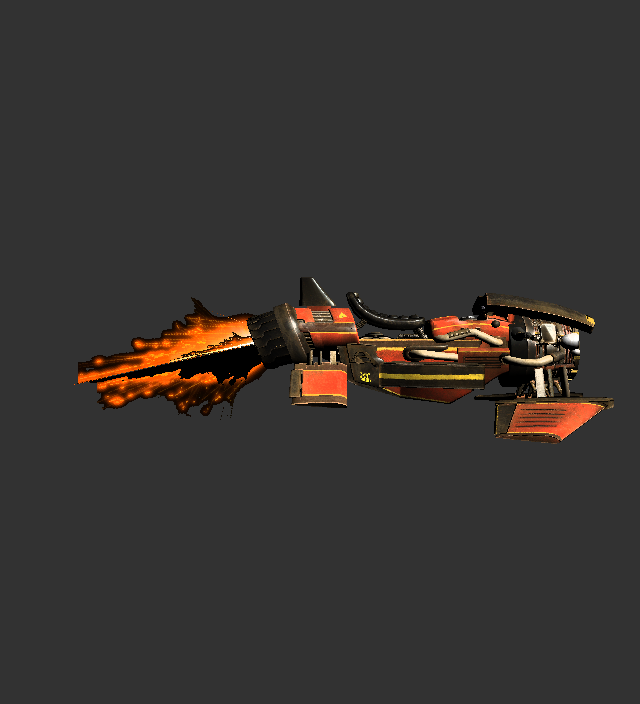

CPU & GPU Rasterizer

Interesting project, as it has been quite interesting to learn a lot about what to do and what not to do when writing a ray tracer. As this was one of my first ray tracers, it taught me so much about what goes into making a working ray tracer. I am not entirely happy with how this one turned out, so I am planning on writing a new one where I will apply everything I learnt from this project :)



